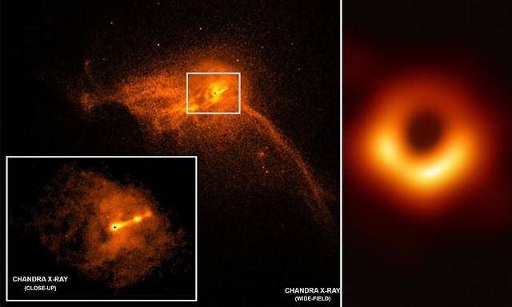
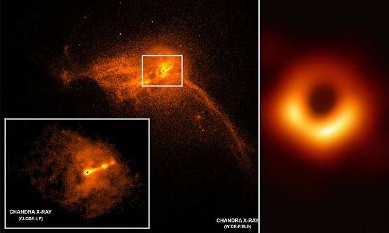

¿Qué son los Agujeros Negros?
Los agujeros negros son regiones del espacio donde la gravedad es tan intensa que ni siquiera la luz puede escapar. Se forman a partir del colapso de estrellas masivas.
Los agujeros negros son regiones del espacio donde la gravedad es tan intensa que ni siquiera la luz puede escapar. Se forman a partir del colapso de estrellas masivas.
